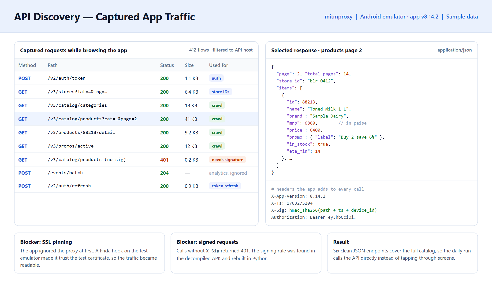
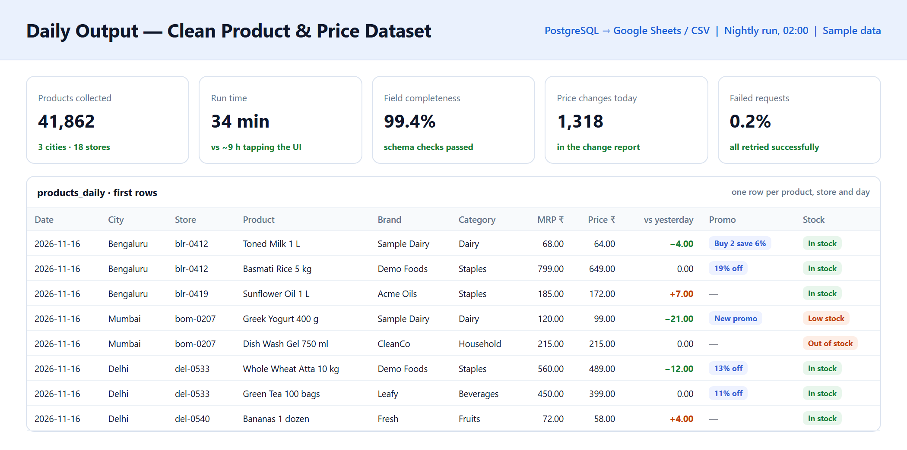
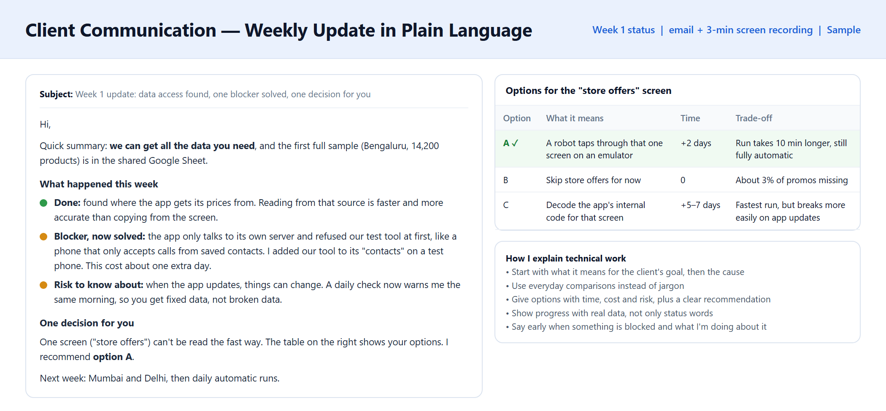
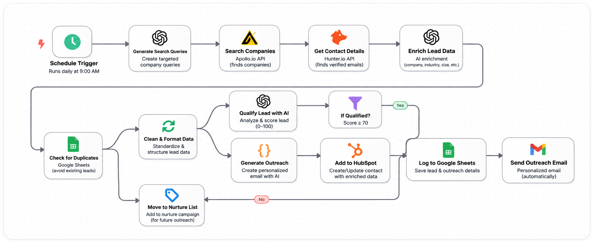

Architecture: one-time discovery, the daily extraction run, and storage, delivery and monitoring.
Architecture: one-time discovery, the daily extraction run, and storage, delivery and monitoring.
API discovery: the app’s own requests, a product response and the signed headers it needs.
Daily output: run summary and the clean product, price and stock table.
Client update: blockers explained in plain language, with options and a clear recommendation.The challenge
A retail analytics team needed daily prices, promotions and stock levels from a quick-commerce grocery app in three cities. The app only exists on Android and iOS, with no website and no public API. Copying data from the screen by hand, or with a tool that taps through the app, would have taken about nine hours a day and broken often. The team also isn’t technical, so they needed to understand what was possible, what was blocking progress and what each option would cost them.
The solution
Instead of reading the screen, I found the private API the app itself uses to load its catalog. I captured its traffic on an Android emulator, got past two blockers (SSL pinning and signed requests), and rebuilt those calls in Python. The daily run now talks to the same API directly, with no phone needed, and only falls back to screen automation for the one screen that can’t be read any other way. The data is cleaned, checked, stored with full history and delivered every morning as a Google Sheet, a CSV and a short change report.
How it works
- Run the app in a test setupThe app runs on a rooted Android emulator (and a spare test phone), logged in as a normal customer account.
- Capture the trafficAll app traffic goes through mitmproxy and HTTP Toolkit, so every request the app makes while browsing categories and products can be seen.
- Get past SSL pinningThe app refused to trust the proxy certificate. A Frida hook (with objection) on the test emulator turned the pinning check off, so the traffic became readable.
- Understand the signed requestsCalls without a special signature header returned 401. Decompiling the APK with jadx showed how the signature and token refresh work, and that logic was rebuilt in Python.
- Daily extractionAn async Python crawler with httpx walks categories, product lists and product details for each city and store, with rate limits, retries and paging.
- UI fallback for one screenOne screen loads its data from native code. Appium with UiAutomator2 reads that screen directly on an emulator instead.
- Clean, validate and deliverPrices, units and promos are normalised and checked with Pydantic. Data is stored in PostgreSQL with history, then exported to Google Sheets and CSV with a change report.
Technical blockers and how they were solved
- SSL certificate pinning: runtime hook with Frida on a test emulator
- Signed request headers (HMAC with timestamp and device ID): logic found in the decompiled APK and rebuilt in Python
- Short-lived login tokens: automatic refresh before they expire
- Location-based results: store IDs collected for each city and passed with every request
- One screen built in native code: Appium screen automation as a targeted fallback
- App updates that change the API: a daily version check with Slack alerts
Explaining blockers to a non-technical client
- Every update starts with what it means for their goal, then the reason
- Everyday comparisons instead of jargon: SSL pinning became “a phone that only accepts calls from saved contacts”
- When there is a decision to make, I show 2 or 3 options with time, cost and risk, and say which one I recommend
- Progress is shown with real data in a shared Google Sheet, not only status words
- A short weekly email plus a 3-minute screen recording, and blockers are raised the same day they appear
Reliability and responsible use
- Only public catalog data: products, prices, promos and stock. No other customers’ personal data
- Polite request rates with random delays and backoff on errors
- Schema checks flag missing or changed fields before bad data reaches the client
- Runs in Docker on a small VPS with a nightly cron job, logs and a run summary
Results
- About 42,000 products across 3 cities and 18 stores collected every day
- 34-minute daily run instead of about 9 hours of tapping through the app
- 99.4% field completeness, with 0.2% failed requests that all succeed on retry
- App updates detected the same morning, so data breaks are fixed before the client notices
- The client always knew what was blocked, why, and what their options were
Demonstration build with sample data.
Other projects

Four AI agents draft a complete, cited RFP response in minutes, using OpenAI, Claude and Gemini for what each does best.

An n8n pipeline that finds, verifies, enriches and qualifies leads, then syncs them to HubSpot.

An LLM pipeline on vLLM that generated 1.5 million multiple-choice reading comprehension Q&A pairs, with validation, JSON repair and retries.